<!DOCTYPE html>
<html lang="en">
<head>
<meta charset="UTF-8">
<meta name="viewport" content="width=device-width,initial-scale=1">
<title>2.5 Measures of Time — Measurements</title>
<meta name="description" content="Class 6 Mathematics · Term 2 · Measurements · 2.5 Measures of Time">
<link rel="icon" href="data:image/svg+xml,<svg xmlns='http://www.w3.org/2000/svg' viewBox='0 0 100 100'><text y='.9em' font-size='90'>📘</text></svg>">
<link rel="stylesheet" href="../../../assets/book.css">
<link rel="stylesheet" href="https://cdn.jsdelivr.net/npm/katex@0.16.11/dist/katex.min.css" crossorigin="anonymous">
</head>
<body>
<header class="topbar">
<div class="topbar-in">
  <div class="crumb">
    <span class="c1"><a href="../../../index.html">Library</a> · <a href="../../index.html">Class 6 Mathematics · Term 2</a></span>
    <span class="c2">Measurements · 2.5 Measures of Time</span>
  </div>
  <a class="tb-btn" data-nav="prev" href="../../02-measurements/05-exercise-2.1/index.html" title="Exercise 2.1">←</a>
  <details class="drawer"><summary class="tb-btn" title="Sections in this chapter">☰</summary>
<div class="drawer-panel"><div class="dh">Measurements</div><a href="../01-introduction-2.1/index.html">2.1 Introduction</a><a href="../02-recap-2.2/index.html">2.2 Recap</a><a href="../03-conversions-within-the-metric-system-2.3/index.html">2.3 Conversions within the Metric System</a><a href="../04-fundamental-operations-on-quantities-with-different-units-2.4/index.html">2.4 Fundamental Operations on Quantities with Different Units</a><a href="../05-exercise-2.1/index.html">Exercise 2.1</a><a href="../06-measures-of-time-2.5/index.html" aria-current="page">2.5 Measures of Time</a><a href="../07-ict-corner/index.html">ICT CORNER</a><a href="../08-exercise-2.2/index.html">Exercise 2.2</a><a href="../09-exercise-2.3/index.html">Exercise 2.3; Miscellaneous practice Problems</a><a href="../10-summary/index.html">Summary</a></div></details>
  <a class="tb-btn" data-nav="next" href="../../02-measurements/07-ict-corner/index.html" title="ICT CORNER">→</a>
  <button class="tb-btn" data-theme-toggle title="Toggle light / dark" aria-label="Toggle light or dark theme">◐</button>
</div>
<div class="progress"><span style="width:40.4%"></span></div>
</header>
<main class="wrap">
<div class="sec-head">
  <p class="eyebrow"><a href="../index.html">Chapter 2 · Measurements</a></p>
  <h1>2.5 Measures of Time</h1>
  <p class="sec-meta">Textbook pages 9–16 · 26 figures</p>
</div>
<article class="prose">
<p>The teacher asks students to answer the following questions: \tfrac{3}{4} How long do you take to run 100 metres? \tfrac{3}{4} What is the time taken for a cup of rice \tfrac{3}{4} How long do you take to walk one to be cooked? kilometre? \tfrac{3}{4} What is the cultivation period of groundnut? These questions will help us to find the importance of time in our day-to-day life. Now let us discuss the development of measures of time. The procedure of measuring time has undergone several changes from ancient period. Initially, a stick in the sand was used to measure time by measuring the length of the shadow of that stick. Then horizontal and vertical plates were used as sundials to measure time between sunrise and sunset, that is in the day time. Firing of knotted ropes was used to measure time in the darkness. The approximate time taken for the fire to travel from one knot to other formed the part of night. In later days, a day was divided into 24 equal parts (hours) of which 12 hours were for daytime and 12 hours were for night time approximately. Time taken by the Earth to complete one full rotation around the Sun is known as the Solar Year. It was divided into 12 equal parts which is known as the Solar month. The duration between two full moons is known as the lunar month and 12 lunar months are known as lunar year. But we follow solar year and month.</p>
<p>Various clocks had been designed and used to measure time from different parts of world, like water clock, sun dial, candle clock, sand clock, rope clock, etc…. Have you seen those clocks? Look at the clocks shown below.</p>
<figure class="fig table-fig wide">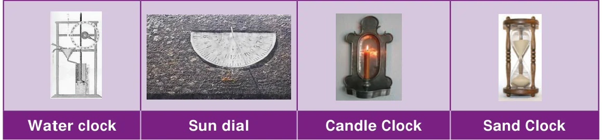</figure>
<p>Study of devices that are measuring the time is called ‘HOROLOGY’. Nowadays, we use pendulum clock,digital clock, quartz clock, atomic clock to find time accurately. Our Tamil people were experts in the Astronomical science. The Tholkappiam deals the pozhuthu (time). They divide a day into six major divisions, together called “Sirupozhuthu (சிறுபொழுது)” . A year into six major divisons, together called “Perumpozhuthu (பெரும்பொழுது)” 1 Nazhigai \(= 24\) min; 1 hour \(= 2.5\) nazhigai \(= 1\) Orai; 1 day \(= 24\) hours \(= 60\) nazhigai [Tamil people used the device " kuri neer kannel" to measure night times............]</p>
<p>Unit of Time: Today we are measuring time accurately. The units of time are second, minute, hour, day, week, month, year, etc. They are interrelated.</p>
<p>Recap:</p>
<ul class="qlist">
<li><span class="mk">1.</span><span class="lt">Read and write the time in the appropriate place.</span></li>
</ul>
<figure class="fig table-fig wide">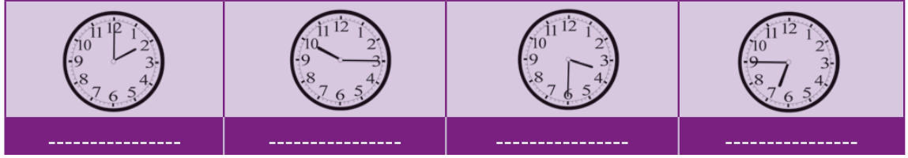</figure>
<h3 id="s-2-5-1-reading-the-time">2.5.1 Reading the time</h3>
<p>Practise to say time in two ways:-</p>
<figure class="fig table-fig wide">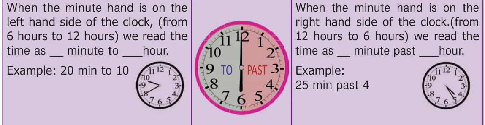</figure>
<p>Practise to say the time using "past"</p>
<figure class="fig table-fig wide">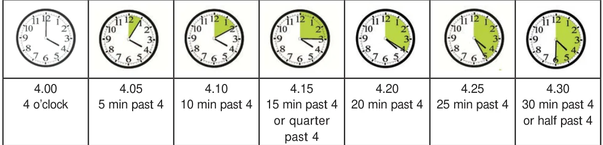</figure>
<p>Practise to say the time using "To"</p>
<figure class="fig table-fig wide">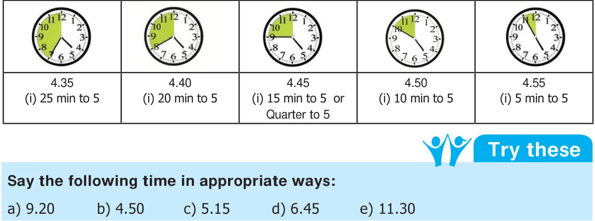</figure>
<aside class="sidenote"><p>MEASUREMENTS</p></aside>
<h3 id="s-2-5-2-conversion-of-time">2.5.2 Conversion of Time</h3>
<p>Calculation of time to the nearest seconds is very essential in some situations like launching rocket, running race, arrival and departure. So, we need to know the conversion of time. Let us remember the time related chart as follows: Example 12: A farmer ploughed the field for 3 hours 35 minutes. How many minutes did he plough?</p>
<figure class="fig side-fig">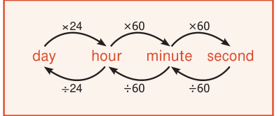</figure>
<h4 class="callout-h" id="s-solution">Solution:</h4>
<p>Time for which the farmer ploughed the field \(= 3\) hours and 35 minutes \(= 3 x 60\) minutes \(+ 35\) minutes \(= 180\) minutes \(+ 35\) minutes</p>
<div class="mathblock"><p>\(= 215\) minutes</p></div>
<p>Examples 13: A handloom weaver takes 6 hours 20 minutes 30 seconds and 5 hours 50 minutes 45 seconds to weave two silk sarees. What is the total time to weave the two silk sarees?</p>
<h4 class="callout-h" id="s-solution">Solution:</h4>
<figure class="fig table-fig wide">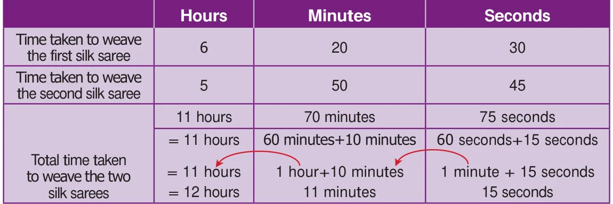</figure>
<p>Example 14: A satellite is placed in its orbit in 7 hours 16 minutes 20 seconds. Calculate it in seconds. Solution: The satellite reaches its orbit in 7 hours \(+ 16\) minutes \(+ 20\) seconds \(= (7 x 60 x 60)\) seconds +(16 x 60) seconds +20 seconds \(= 25200\) seconds \(+ 960\) seconds \(+ 20\) seconds</p>
<div class="mathblock"><p>\(= 26,180\) seconds</p></div>
<p>The satellite reaches its orbit in 26,180 seconds Example 15: Two cyclists took 5 hours 35 minutes 10 seconds and 8 hours respectively to cover the same distance. Find the difference in time taken by them</p>
<figure class="fig side-fig">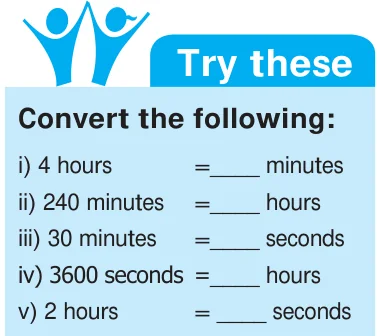</figure>
<h4 class="callout-h" id="s-solution">Solution:</h4>
<figure class="fig table-fig">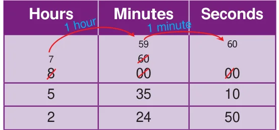</figure>
<h3 id="s-2-5-3-ordinary-time-or-the-12-hour-format">2.5.3 Ordinary Time or the 12-Hour Format</h3>
<p>The 12 hour clock has ante meridiem (a.m) and post meridiem (p.m) because the number of hours in a day is divided into day and night. In the clock, exactly 12.00 at night is called midnight; and exactly 12.00 at day is called noon. a.m (ante meridiem) denotes the time that is after 12:00 midnight and before 12:00 noon. p.m (post meridiem) denotes the time that is after 12:00 noon and before 12:00 midnight.</p>
<h4 class="callout-h" id="s-example">Example:</h4>
<figure class="fig side-fig">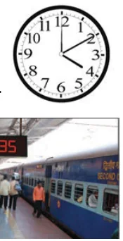</figure>
<p>\tfrac{3}{4} Morning 5 o’ clock is denoted as 5.00 a.m \tfrac{3}{4} Evening 5 o’ clock is denoted as 5.00 p.m \tfrac{3}{4} In 3.20 a.m., the point does not mean the usual decimal point.</p>
<h3 id="s-2-5-4-railway-time-or-the-24-hour-format">2.5.4 Railway Time or the 24-Hour Format</h3>
<p>Generally, we use 12 hour clock but Railways, Airways, Defence forces and Television networks use 24 hour clock to avoid morning or evening confusions. When you are in a railway station, you can hear the announcement and see the use of hours instead of a.m. and p.m, because they follow the 24 hour format. Therefore, there is no need to say morning and evening in their time. Railway time is usually denoted in 4 digits. The first two digits shows the hours and the last two digits shows the minutes. For example, 5 p.m is denoted as 17:00 hours. Example: 7 o’ clock morning \(= 07:00\) hours 1 o’ clock evening \(= 13:00\) hours (12+1 hour) i.e., after 12 noon they count continuously up to 24 hours. 12 midnight is written as 00:00 hours or 24:00 hours. 12 noon is written as 12:00 hours</p>
<figure class="fig side-fig">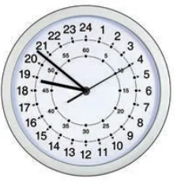</figure>
<h3 id="s-2-5-5-conversion-of-time-formats">2.5.5 Conversion of Time Formats</h3>
<p>Let us observe the clock. Remember the following points while converting from one type of time to another type \tfrac{3}{4} To convert 12 hour time to 24 hour time, simply change 12 hours as 00:00 hours between 12.00 midnight and 01.00 a.m. There is no change upto 01.00 p.m. Add 12:00 hours to any hour from 01.00 p.m. \tfrac{3}{4} To convert 24 hour time to 12 hour time simply change 00:00 hours as 12 hours between 00:00 hours and 01:00 hour. After that, there is no change upto 13:00 hours. Subtract 12:00 hours from any hours from 13:00 hours. Minutes will not change in both the formats.</p>
<figure class="fig side-fig">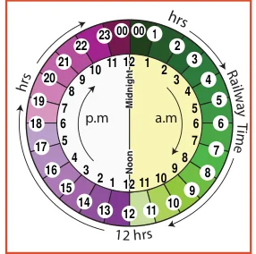</figure>
<p>Convert into the 12 hour format: (Ordinary time)</p>
<figure class="fig table-fig wide">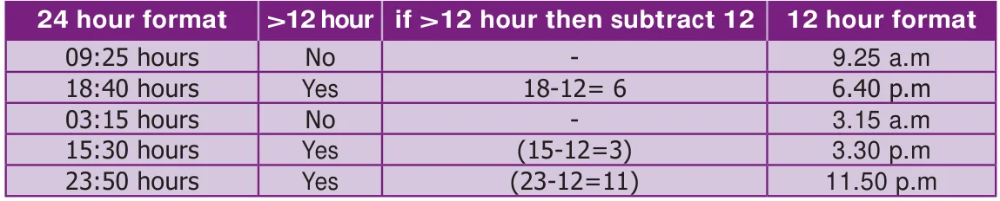</figure>
<aside class="sidenote"><p>MEASUREMENTS</p></aside>
<p>Convert into the 24 hour format (Railway time )</p>
<figure class="fig table-fig wide">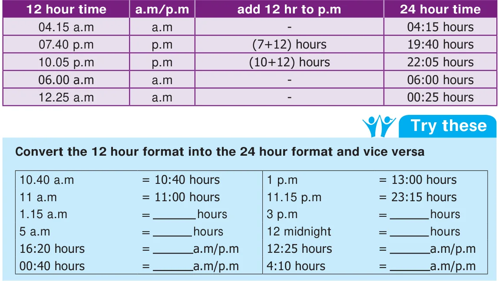</figure>
<h3 id="s-2-5-6-duration-between-the-two-given-time-instances">2.5.6 Duration between the two given time instances</h3>
<p>Example16: Find the duration between 6 a.m and 4 p.m</p>
<figure class="fig table-fig wide">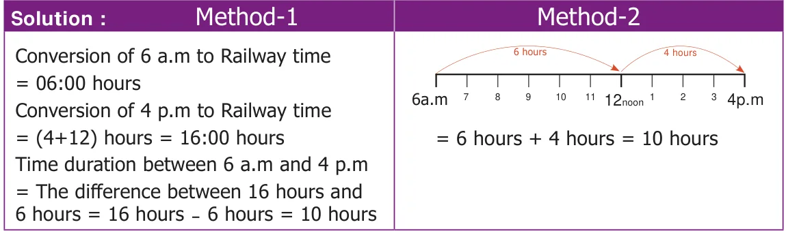</figure>
<h4 class="callout-h" id="s-example-17">Example 17:</h4>
<p>The arrival and departure timings of the Chennai - Trichy Express are given below.</p>
<figure class="fig table-fig">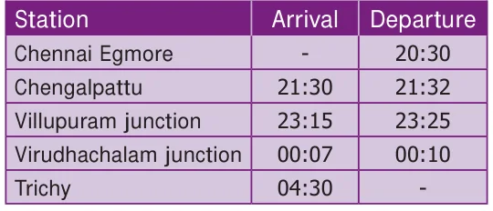</figure>
<figure class="fig side-fig">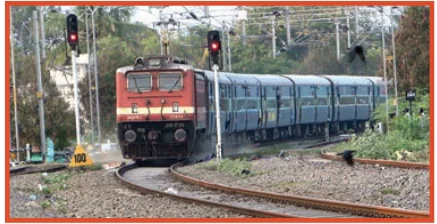</figure>
<p>At what time does the train depart from Chennai Egmore to arrive at Trichy? The train departs from Egmore at 20:30 hours to arrive Trichy at 4:30 hours.</p>
<ul class="qlist">
<li><span class="mk">(ii)</span><span class="lt">How long does it halt at Villupuram?</span></li>
</ul>
<p>It halts at Villupuram for 10 minutes.</p>
<ul class="qlist">
<li><span class="mk">(iii)</span><span class="lt">How many halts are there in between Chennai and Trichy ?</span></li>
</ul>
<p>There are 3 halts (1) Chengalpattu (2) Villupuram (3) Virudhachalam</p>
<ul class="qlist">
<li><span class="mk">(iv)</span><span class="lt">Find the total journey time of the train from Chennai to Trichy.</span></li>
</ul>
<p>Hint: If the journey crosses the midnight, calculate the time duration from starting hours to midnight, then from midnight to arrival time.</p>
<figure class="fig table-fig wide">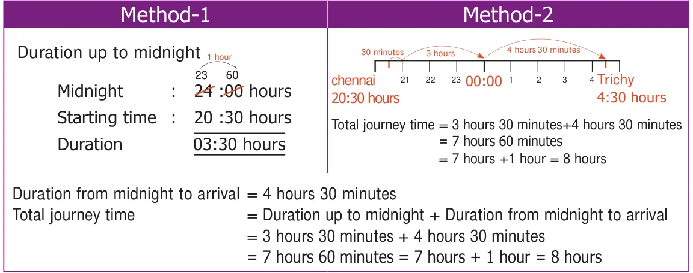</figure>
<h4 class="callout-h" id="s-example-18">Example 18:</h4>
<p>The clock is set at 7 a.m. If the clock slows down two minutes every hour, find the time shown by the clock at 6 p.m. Solution : Time slowed down for 1 hour \(= 2\) minutes Time slowed down for 11 hours \(=11 x 2 = 22\) minutes So, at 6 p.m the clock slows down by 22 minutes. That means the clock shows 5 hours 38 minutes at 6 p.m.</p>
<figure class="fig side-fig">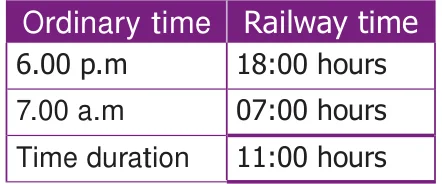</figure>
<h3 id="s-2-5-7-year">2.5.7 Year</h3>
<p>A year is the time taken by the Earth to make one revolution around the Sun. A year has 12 months or 365 days. Each month is divided into weeks. A month has 4 weeks and a few more days. A week is of 7 days. A month has 30 days \(/ 31\) days except February. February has 28 or 29 days.</p>
<p>Leap Year</p>
<p>We know that the Earth revolves around the Sun as well as rotates to itself. The Earth takes 365 days 6 hours to make a complete revolution around the sun. We take 365 days as one year. To adjust 6 hours each year, we add one day to every fourth year</p>
<p>(4 years \(\times 6\) hours \(= 24\) hours \(= 1\) day). Every 4 year has 365 +1 day \(= 366\) days and one day is added to the month of February. Therefore a year which has 366 days is called a Leap Year. In a Leap Year the month of February has 29 days. Every year you are celebrating birthday. If a person's birthday falls on 29th February, he/she has to celebrate the birthday once in 4 years only.</p>
<aside class="sidenote"><p>th</p></aside>
<figure class="fig">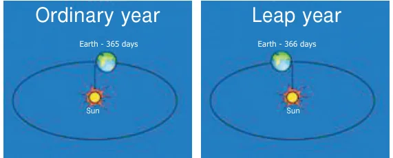</figure>
<aside class="sidenote"><p>MEASUREMENTS</p></aside>
<p>How can we identify a leap year?</p>
<p>I. Generally a year which is divisible by 4 is considered as a leap year.</p>
<p>Examples:</p>
<ul class="qlist">
<li><span class="mk">1.</span><span class="lt">2016 is a leap year, because 2016 is</span></li>
</ul>
<figure class="fig">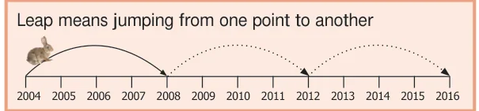</figure>
<p>exactly divisible by 4</p>
<ul class="qlist">
<li><span class="mk">2.</span><span class="lt">2018 is not divisible by 4 and it leaves</span></li>
</ul>
<p>remainder. So it is not a leap year. II In centuries:</p>
<figure class="fig side-fig">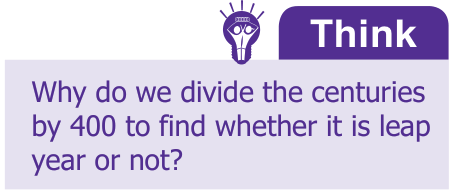</figure>
<p>Years which are multiples of 100 are centuries, such as 1100, 1200, 1300….1900, 2000, 2100 ….etc. The century which is divisible by 400 is a leap year.</p>
<p>Examples:</p>
<ul class="qlist">
<li><span class="mk">1.</span><span class="lt">1200 is divisible by 400; and so it is a leap year.</span></li>
<li><span class="mk">2.</span><span class="lt">1700 is not divisible by 400. and so it is not a leap year.</span></li>
</ul>
<p>Example 19: If Wednesday falls on 20th of December 2017. What is the day on 8th june 2018? Also say the number of days between these two dates.</p>
<figure class="fig">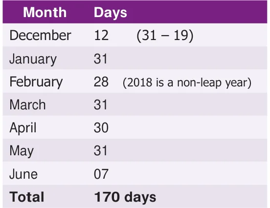</figure>
<aside class="sidenote"><p>24 7 17014 30 282</p><p>170 day \(\div 7\) (why?) 170 days \(= 24\) weeks +2 days Required day is the second day after Wednesday. Therefore 8th of june is Friday.</p></aside>
<p>Example 20: Mala's date of birth is 20-11-1999. What is her age on 05-10-2018?</p>
<h4 class="callout-h" id="s-solution">Solution:</h4>
<figure class="fig">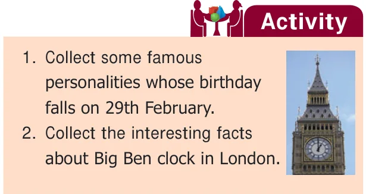</figure>
<p>Convert in the format : YYYY/MM/DD</p>
<figure class="fig">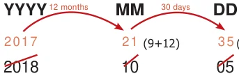</figure>
<div class="mathblock"><p>(5+30)</p></div>
<p>1999 18 yrs 10 months 15 days</p>
<p>Mala’s age : 18 yrs 10 months 15 days</p>
<figure class="fig table-fig wide">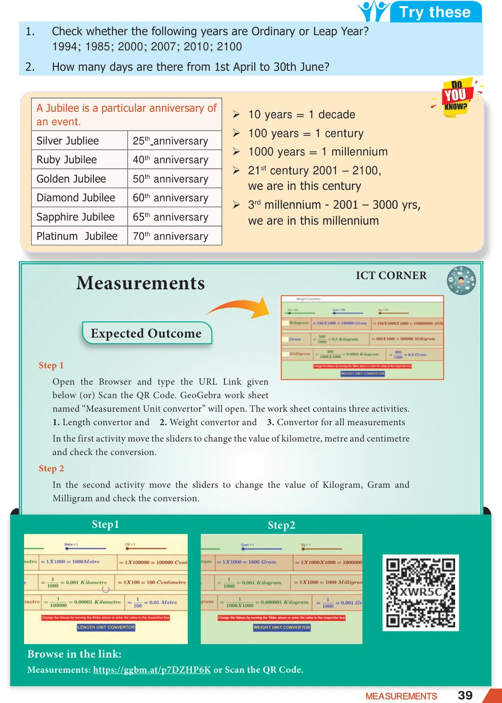</figure>
</article>
<nav class="pager"><a class="" data-nav="prev" href="../../02-measurements/05-exercise-2.1/index.html"><span class="dir">← Previous</span><span class="t">Exercise 2.1</span><span class="ch">Measurements</span></a><a class="nx" data-nav="next" href="../../02-measurements/07-ict-corner/index.html"><span class="dir">Next →</span><span class="t">ICT CORNER</span><span class="ch">Measurements</span></a></nav>
</main><footer class="site">Generated from the source textbook PDFs · text, figures and exercises belong to their respective publishers.</footer><script defer src="https://cdn.jsdelivr.net/npm/katex@0.16.11/dist/katex.min.js" crossorigin="anonymous"></script>
<script defer src="https://cdn.jsdelivr.net/npm/katex@0.16.11/dist/contrib/auto-render.min.js" crossorigin="anonymous"
  onload="renderMathInElement(document.body,{delimiters:[
    {left:'\\(',right:'\\)',display:false},
    {left:'$$',right:'$$',display:true},
    {left:'\\[',right:'\\]',display:true}],throwOnError:false,ignoredTags:['script','noscript','style','textarea','pre','code']})"></script>
<script src="../../../assets/book.js"></script>
<script defer src="../../../../assets/search.js?v=1789782769"></script>
<script defer src="../../../../assets/screenshot.js?v=2"></script>
</body>
</html>
